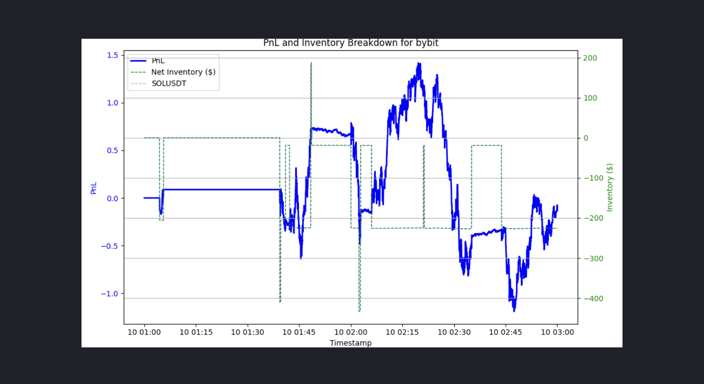
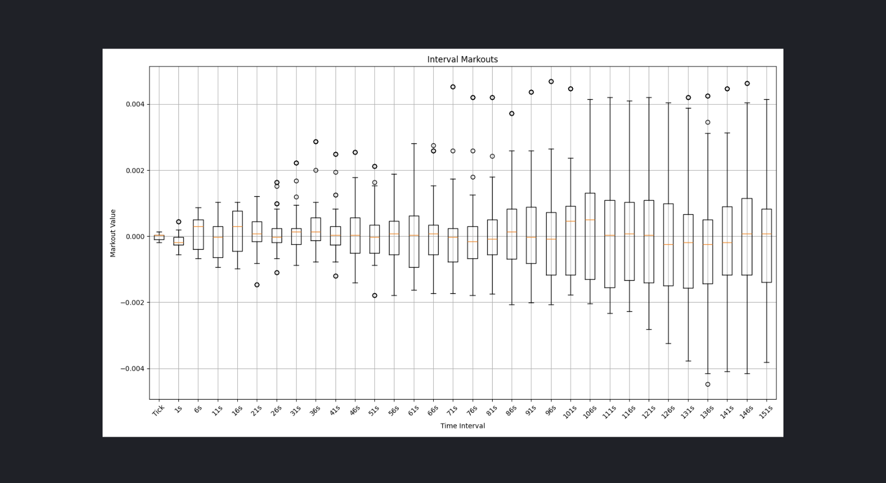
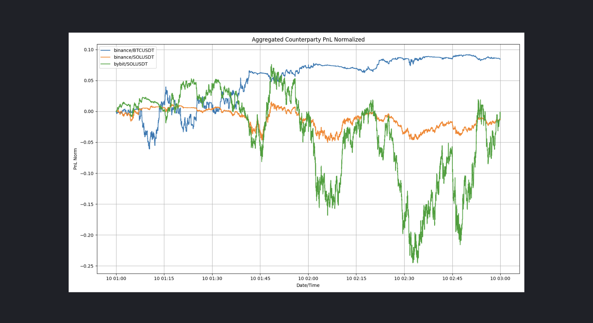

Market Maker
This tutorial shows how to do market making (backtests and live) on different exchanges using quantpylib's gateway connectors, data feeds and order management system.
The sample scripts are placed inside ./scripts folder in the quantpylib repo. This example works with exchanges implementing the quantpylib.gateway.master.Gateway endpoints, such as binance, hyperliquid, bybit paradex and woox.
Let us first consider the data and portfolio states required for a market-making operation. Typically, a market-maker needs to be able to track their portfolio states: order states (pending/open/cancelled/rejected), open positions, account equity/balance and so on.
Of course, tick data feeds are also required. This tick data feed includes but are not limited to orderbook ticks of the market we intend to quote, trade ticks of said market, as well as correlated assets - leader assets (AAPL,BTC) and so on.
In general, a market maker action triggers include but are not limited to internal clock cycles, trade arrival, orderbook delta updates and a number of variable proprietary logic. We may choose to act on these data immediately upon arrival (a on-tick behavior) or store it in some shared state that is later used to compute optimal market quotes. We will explore all of these options.
Live + Simulation Modes
Our message replay architecture allows us to both trade and backtest high-frequency data using a unified codebase for seamless transition from research to production environments.
Let's begin with the following imports - we are going demonstrate using a reference feed for binance/SOLUSDT and quoting on bybit/SOLUSDT. Let us use the following imports.
import os
import pytz
import asyncio
import logging
import argparse
import numpy as np
from pprint import pprint
from decimal import Decimal
from datetime import datetime
from dotenv import load_dotenv
load_dotenv()
import quantpylib.utilities.math as math
import quantpylib.standards.markets as markets
from quantpylib.hft.oms import OMS
from quantpylib.hft.feed import Feed
from quantpylib.gateway.master import Gateway
from quantpylib.utilities.general import _time,pdf_snapshot
show = True
parser = argparse.ArgumentParser(description="Parse script mode.")
parser.add_argument('mode', type=lambda arg:int(arg), help="Set script mode.")
args = parser.parse_args()
simulated = False if args.mode == 1 else True
python3 script.py 0 we will run it in simulation (backtest) mode, otherwise we will trade in a live market for python3 script.py 1.
For binance, we are only using the public data feeds, while we need to perform privileged activity on bybit. So we will need keys for bybit:
config_keys = {
"binance":{},
"bybit":{
'key':'BYBIT_DEMO_KEY',
'secret':'BYBIT_DEMO_SECRET',
'env':'demo'
},
}
exc = 'bybit'
tickers = ["SOLUSDT"]
stream_data = {
"binance":["BTCUSDT","SOLUSDT"],
"bybit":["SOLUSDT"],
}
reference = {
'SOLUSDT':('binance','SOLUSDT'),
}
run = None
time = None
replayer = None
print_interval = 120 * 1000 #every 2 mins
if simulated:
from quantpylib.hft.mocks import Replayer,Latencies
start='2025-01-10:01'
end='2025-01-10:02'
latencies={
Latencies.REQ_PUBLIC:0,
Latencies.REQ_PRIVATE:0,
Latencies.ACK_PUBLIC:0,
Latencies.ACK_PRIVATE:0,
Latencies.FEED_PUBLIC:0,
Latencies.FEED_PRIVATE:0,
}
replayer_configs = {
"maker_fees":0.000,
"taker_fees":0.000,
"latencies":latencies,
}
else:
run = lambda : asyncio.sleep(1e9)
time = lambda : _time()
gateway = Gateway(config_keys=config_keys)
milliseconds the latency for the different message channels, as well as fee tiers for reality modelling.
We will kick off the script like this:
async def main():
await gateway.init_clients()
if simulated:
oms,feed = await sim_prepare()
else:
oms = OMS(gateway=gateway,exchanges=[exc],refresh_orders_snapshot=10,refresh_positions_snapshot=10)
feed = Feed(gateway=gateway)
await oms.init()
await hft(replayer,oms,feed)
await gateway.cleanup_clients()
if __name__ == '__main__':
asyncio.run(main())
The gateway is the connector to the relevant exchanges - which is passed into the oms and feed objects. The oms handles order/position tracking, recovery, execution and auxiliary tasks. The feed does tick data subscription, storing, and retrieval. In simulation environments, we would first need to load data from archives into RAM. The code showing data load and formats are explained in detail in our post on obtaining, archiving, and restoring data.
async def sim_prepare():
l2_data = {exchange:{} for exchange in stream_data}
trade_data = {exchange:{} for exchange in stream_data}
for exchange,tickers in stream_data.items():
# await asyncio.gather(*[
# restore_archives(
# exc=exchange,
# ticker=ticker,
# depth=20,
# start=start,
# end=end,
# ) for ticker in tickers
# ])
lob_archives = [
Feed.load_lob_archives(
exc=exchange,
ticker=ticker,
depth=20,
start=start,
end=end
) for ticker in tickers
]
trade_archives = [
Feed.load_trade_archives(
exc=exchange,
ticker=ticker,
start=start,
end=end
) for ticker in tickers
]
l2_data[exchange] = {ticker:lob_archive for ticker,lob_archive in zip(tickers,lob_archives)}
trade_data[exchange] = {ticker:trade_archive for ticker,trade_archive in zip(tickers,trade_archives)}
global replayer, run, time
replayer = Replayer(
l2_data=l2_data,
trade_data=trade_data,
gateway=gateway,
**replayer_configs
)
oms = replayer.get_oms()
feed = replayer.get_feed()
run = lambda : replayer.play()
time = lambda : replayer.time()
return oms, feed
quantpylib.hft.mocks module MockOMS and MockFeed are used in place of the OMS and Feed objects during simulation. These can be obtained from the Replayer object. Instead of the system time - the replayer time is used for simulations.
We can subscribe to leader tick data feeds, such as BTC trade feeds. For instance, we can use this to compute lead-lag correlations between the quote market and leader market for trade signal. We show how to perform the subscription - but we will not use this in our demonstration. Here the replayer is None in live trading and quantpylib.hft.mocks.Replayer in backtest:
async def hft(replayer,oms,feed):
#>> subscribe to global tick-data (if any)
btc_feed = await feed.add_trades_feed(
exc='binance',
ticker='BTCUSDT',
buffer=500,
)
await asyncio.gather(*[
quote_markets(replayer=replayer,oms=oms,feed=feed,ticker=ticker)
for ticker in tickers
])
await run()
if simulated:
await sim_report(replayer)
quote_markets:
async def trade_handler(msg):
pass #msg : (ts,price,size,dir)
async def book_handler(lob):
pass #lob : quantpylib.hft.lob.LOB
async def quote_markets(replayer,oms,feed,ticker):
live_orders = oms.orders_peek(exc=exc)
live_positions = oms.positions_peek(exc=exc)
ref_exc,ref_ticker = reference[ticker]
reference_trade_id = await feed.add_trades_feed(
exc=ref_exc,
ticker=ref_ticker,
buffer=500,
# handler=trade_handler
)
reference_trades = feed.get_feed(reference_trade_id)
reference_l2_id = await feed.add_l2_book_feed(
exc=ref_exc,
ticker=ref_ticker,
depth=20,
buffer=100,
# handler=book_handler
)
reference_lob = feed.get_feed(reference_l2_id)
ticker_trade_id = await feed.add_trades_feed(
exc=exc,
ticker=ticker,
buffer=500,
)
ticker_trades = feed.get_feed(ticker_trade_id)
oms does order tracking and maintains live_orders which is a quantpylib.standards.portfolio.Orders object. Similarly, the oms maintains live_positions which is a quantpylib.standards.portfolio.Positions object.
These are achieved via the gateway's underlying socket connections and requests. Note that the oms itself is a separate functionality provided by quantpylib, and is able to do a variety of useful things - such as registering coroutine handlers for order updates, position fills and so on - see examples here. In this section, we will not register any order/position update handlers, and just rely on the live updation of our orders which is intitated by default on oms.init().
Also, we subscribe to the reference market tick data feeds. We can register handlers for a 'on-tick' behavior - the trades receive ts,price,size,dir in the handler and orderbook updates receive quantpylib.hft.lob.LOB object. We are not going to have triggers for orders (you can, if you want) on the reference market tick events. Instead, we are going to use the live data buffers reference_trades (a quantpylib.hft.trades.Trades) object and reference_lob (a quantpylib.hft.lob.LOB) object. These live data buffer classes have in-built methods to compute useful statistics such as get_imbalance, get_vol, get_mid and so on. In our demonstration, we choose action triggers to follow the on tick behaviour of orderbook events on the quote market.
Say, we would like to submit/cancel orders using the following logic (there is no alpha in this quoter):
1. Fix order notional value at 200.
2. Compute volume adjusted mid price (VAMP) with notional value of the sum of last 15 taker trades. The VAMP is computed on the orderbook of the reference market, not quote market.
3. Control inventory by quoting around VAMP with baseline spread of 6 bps, and between 2bps and 6bps depending on holding inventory. Also, be strictly less aggressive than BBA on quote exchange.
4. If the bid and ask level does not exist, submit new orders. If other price level orders exist, cancel.
We make no comment or assertions on the viability of said 'rules'. For specifics on how to pass the parameters to oms methods, refer to documentation and examples. gateway documentation and examples should be helpful. Let's continue with the quote_markets implementation:
async def quote_markets(replayer,oms,feed,ticker):
#...
ticker_trades = feed.get_feed(ticker_trade_id)
#...code above
order_value = 200
last_print = time()
async def l2_handler(lob):
nonlocal last_print
stamp = time()
stamp = stamp - (stamp % print_interval)
if stamp != last_print:
print(datetime.fromtimestamp(time()/1000,tz=pytz.utc))
last_print = stamp
pos_amount = live_positions.get_ticker_amount(ticker=ticker)
inventory_notional = float(pos_amount) * lob.get_mid()
q = inventory_notional / order_value
order_bids = live_orders.get_bid_orders(ticker=ticker)
order_asks = live_orders.get_ask_orders(ticker=ticker)
tds = reference_trades.get_sample(n=15)
notional = 20000 if len(tds) == 0 else np.sum(tds[:,1] * tds[:,2])
ref_vamp = reference_lob.get_vamp(notional)
if np.isnan(ref_vamp):
return
bid = min(
ref_vamp - ((6 + np.tanh(q) * 4) * 1e-4) * ref_vamp,
lob.get_bids()[1,0]
)
ask = max(
ref_vamp + ((6 + np.tanh(-q) * 4) * 1e-4) * ref_vamp,
lob.get_asks()[1,0]
)
bid_price = Decimal(str(oms.rounded_price(exc=exc,ticker=ticker,price=bid)))
ask_price = Decimal(str(oms.rounded_price(exc=exc,ticker=ticker,price=ask)))
orders = []
if not any(bid.price == bid_price for bid in order_bids):
orders.append({
"exc":exc,
"ticker":ticker,
"amount":order_value/lob.get_mid(),
"price":bid_price,
"round_to_specs":True,
})
if not any(ask.price == ask_price for ask in order_asks):
orders.append({
"exc":exc,
"ticker":ticker,
"amount":order_value/lob.get_mid() * -1,
"price":ask_price,
"round_to_specs":True,
})
cancels = []
for order in order_bids:
if order.price != bid_price:
cancels.append({
"exc":order.exc,
"ticker":order.ticker,
"cloid":order.cloid
})
for order in order_asks:
if order.price != ask_price:
cancels.append({
"exc":order.exc,
"ticker":order.ticker,
"cloid":order.cloid
})
if orders:
try:
await asyncio.gather(*[
oms.limit_order(**order) for order in orders
])
except e:
logging.exception(e)
if cancels:
try:
await asyncio.gather(*[
oms.cancel_order(**cancel) for cancel in cancels
])
except:
logging.exception(e)
l2_feed = await feed.add_l2_book_feed(
exc=exc,
ticker=ticker,
depth=20,
buffer=100,
handler=l2_handler
)
l2_handler. The specified rules are then implemented. On the web-platform of selected exchange (bybit) we can see the quotes submitted (if live):

Simulation Report (ORS)
If we were in simulation mode, the Replayer object contains very useful metrics and plots for the simulation events. We will demonstrate these - recall that in the hft method in the above section - we called the sim_report method.
We will also demonstrate a new proposal, the Open Research Standard (ORS), quantpylib's push towards replicable, shareable and effortless quantitative research with code. Quantitative research and papers are often extremely challenging to replicate either in part of the academic tendency for citation mining (lying with statistics) or variability in data, assumptions and implementation. The ORS promotes reliable research with the automatic logging of code results, parameters and implementation together with the pdf_snapshot method for report generation.
async def sim_report(replayer):
folder = './logs/reports'
exchange_plot = f'{folder}/exchange.png'
markouts_plot = f'{folder}/markouts.png'
prices_plot = '{folder}/prices_{ticker}.png'
counterparty_plot = f'{folder}/counterparty_pnl.png'
fairprices_plot = f'{folder}/fairprices.png'
#see plots and reports
report_data = []
report_data.append((
'configs',
{
'exc':exc,
'tickers':tickers,
'_start':start,
'_end':end,
'params':replayer_configs,
},
'dict'
))
statistics = replayer.statistics()
report_data.append(('stats',statistics,'dict'))
df_exchange = replayer.df_exchange(exc=exc,save=exchange_plot,show=show)
report_data.append(('perf[inventory]',df_exchange,'df'))
report_data.append(('perf[inventory]',exchange_plot,'img'))
df_markouts = replayer.df_markouts(save=markouts_plot,show=show)
report_data.append(('markouts',markouts_plot,'img'))
for ticker in tickers:
save = prices_plot.format(folder=folder,ticker=ticker)
df_prices = replayer.df_prices(
ticker=ticker,exc=exc,show=show,save=save
)
report_data.append(('fills',save,'img'))
norm_pnls = replayer.df_counterparty_pnl(exc_tickers=stream_data,save=counterparty_plot,show=show)
report_data.append(('counterparty_pnl',counterparty_plot,'img'))
pdf_snapshot(
save=f'{folder}/{datetime.now().strftime('%Y-%m-%d %H:%M:%S')}.pdf',
code_file=__file__,
report_data=report_data,
include_comments=False
)
The replayer.statistics() gives us simulation stats:
{'binance': None,
'bybit': {'#trades': 59,
'0s Markouts': 0s -0.000015
0s -0.000015
dtype: float64,
'11s Markouts': -7.368662532822541e-06,
'Tick Markouts': -1.540771245685202e-05,
'flip_win_ratio': 0.6,
'interval_quartiles': ['0s', '0s', '11s'],
'inventory_flips': 5,
'max_leverage': 0.04,
'max_norm_beta': 0.04,
'maxdd(%)': 0.03,
'pnl': -0.14,
'roi': -0.0,
'sharpe': -7.76,
'terminal': 9999.86,
'turnover': 0.39,
'volume': Decimal('3899.41'),
'volume/s($)': Decimal('0.65')}}
The replayer.df_exchange() gives us dataframe and plot on exchange performance - the pnl, inventory breakdown (in our case, only one ticker was quoted so net inventory is just one market):

We can see that our inventory management was somewhat effective, and our pnl is flat.
The replayer.df_markouts() gives us markouts on the next tick and more than a few minutes out.

The replayer.df_prices() gives us prices overlayed with inventory and fills:
The replayer.df_counterparty_pnl() gives us the normalized (across exchange and time axis) pnl from taking on all of the taker order flow on that exchange market. One might argue that the market maker's role is to aim to achieve a positively biased (or at least non-adverse) sample of this order flow.

Open Research Standard
The code lines in the previous section help to generate an ORS report. It takes the file path to save, the implementation file, as well as report data which takes types of df, img, or dict to render.
pdf_snapshot(
save=f'{folder}/{datetime.now().strftime('%Y-%m-%d %H:%M:%S')}.pdf',
code_file=__file__,
report_data=report_data,
include_comments=False
)
Modelling
Please refer to the previous section on market making in simulation and live environments to get an appreciation of the replayer class. This would make modelling extremely simple. In fact, we only need to change one function.
For demonstration, we would like to assess the effectiveness of VAMP (volume adjusted mid price) in short term price prediction - as well as compare between different notional values as parameter to the depth of order book pressure relevant in VAMP models.
We begin with the imports:
import os
import pytz
import asyncio
import logging
import argparse
import numpy as np
from pprint import pprint
from datetime import datetime
from dotenv import load_dotenv
load_dotenv()
from quantpylib.hft.oms import OMS
from quantpylib.hft.feed import Feed
from quantpylib.gateway.master import Gateway
from quantpylib.utilities.general import _time,pdf_snapshot
show = False
simulated = True
config_keys = {
"binance":{},
}
exc = 'binance'
tickers = ["SOLUSDT"]
stream_data = {
"binance":["SOLUSDT"],
}
run = None
time = None
replayer = None
print_interval = 120 * 1000
if simulated:
from quantpylib.hft.mocks import Replayer,Latencies
start='2025-01-10:01'
end='2025-01-10:05'
latencies={
Latencies.REQ_PUBLIC:0,
Latencies.REQ_PRIVATE:0,
Latencies.ACK_PUBLIC:0,
Latencies.ACK_PRIVATE:0,
Latencies.FEED_PUBLIC:0,
Latencies.FEED_PRIVATE:0,
}
replayer_configs = {
"maker_fees":0.000,
"taker_fees":0.000,
"latencies":latencies,
}
else:
run = lambda : asyncio.sleep(1e9)
time = lambda : _time()
gateway = Gateway(config_keys=config_keys)
quote_markets function. Again, we can choose to act on trade ticks, orderbook ticks, or clock ticks. We will stay with the orderbook ticks. This is both extremely simple and self-explanatory:
async def quote_markets(replayer,oms,feed,ticker):
last_print = time()
async def l2_handler(lob):
nonlocal last_print
stamp = time()
stamp = stamp - (stamp % print_interval)
if stamp != last_print:
print(datetime.fromtimestamp(time() / 1000,tz=pytz.utc))
last_print = stamp
for vamp in [10,30,50,100,200]:
replayer.declare(
key=f'vamp{vamp}k',
value=lob.get_vamp(vamp * 1000),
exc=exc,
ticker=ticker,
group='vamp'
)
l2_feed = await feed.add_l2_book_feed(
exc=exc,
ticker=ticker,
depth=20,
buffer=100,
handler=l2_handler
)
declare method, which takes in key-value arguments for arbitrary random variable and corresponding realised estimate. The exc, ticker and group are optional labels, and it would come in very handy.
That's it! After the replay is done in the hft coroutine, we would do our analysis in the sim_report implementation:
async def sim_report(replayer):
folder = './logs/reports'
fairprices_plot = f'{folder}/fairprices.png'
regression_plot = f'{folder}/regression.png'
regression_influence = f'{folder}/regression_influence.png'
price_plot = f'{folder}/prices.png'
#see plots and reports
report_data = []
report_data.append((
'configs',
{
'exc':exc,
'tickers':tickers,
'_start':start,
'_end':end,
'params':replayer_configs,
},
'dict'
))
Replayer class provides utility functions to compare different fairprice estimators sharing the group label:
metrics_df, declarations, error_dfs = replayer.df_fairprices(group='vamp',plot=False)
report_data.append(('fairprice metrics',metrics_df,'df'))
Q1(e%) Q3(e%) MEDIAN(e%) MEAN(e%) MSE(e%) MAD(e%) MSE* MAD*
T+ Estimator
t0 vamp100k -0.003743 0.002893 -0.000325 -0.000447 0.000018 0.003568
vamp10k 0.000000 0.000000 0.000000 0.000001 0.000002 0.000679 * *
vamp200k -0.004440 0.002503 -0.000950 -0.001001 0.000022 0.003854
vamp30k -0.001454 0.001460 0.000000 -0.000041 0.000007 0.001949
vamp50k -0.002563 0.002393 0.000000 -0.000140 0.000011 0.002774
t1 vamp100k -0.004179 0.003159 -0.000457 -0.000401 0.000060 0.005186
vamp10k -0.000214 0.000000 0.000000 0.000047 0.000059 0.003743 *
vamp200k -0.004891 0.002762 -0.001088 -0.000955 0.000062 0.005395
vamp30k -0.002253 0.001967 0.000000 0.000005 0.000057 0.004318 *
vamp50k -0.003128 0.002764 -0.000100 -0.000094 0.000057 0.004751
t10 vamp100k -0.024027 0.023172 -0.000856 0.000551 0.001625 0.030386 * *
vamp10k -0.023463 0.023515 0.000000 0.000999 0.001644 0.030497
vamp200k -0.024568 0.022738 -0.001454 -0.000003 0.001626 0.030429
vamp30k -0.023469 0.023481 -0.000109 0.000957 0.001632 0.030412
...TRUNCATED OUTPUT FOR DIFFERENT FORWARD INTERVALS T(SECONDS)
* represents the best estimator for that forward looking interval. We can see that the lowest notional vamp (closest to mid-price) is the best estimator for the next-tick mid price, and that deeper levels of orderbook pressure are favorable for longer-time horizons.
We may also be working with non-fairprice estimators, and want to simply retrieve our declarations (arguments are optional filters)
and we get: ts key value exc ticker group
0 1736470799934 vamp100k 186.327409 binance SOLUSDT vamp
1 1736470800444 vamp100k 186.341816 binance SOLUSDT vamp
2 1736470800954 vamp100k 186.297270 binance SOLUSDT vamp
3 1736470801458 vamp100k 186.264105 binance SOLUSDT vamp
4 1736470801962 vamp100k 186.252672 binance SOLUSDT vamp
... ... ... ... ... ... ...
35006 1736488797277 vamp100k 189.794952 binance SOLUSDT vamp
35007 1736488797865 vamp100k 189.794885 binance SOLUSDT vamp
35008 1736488798422 vamp100k 189.794705 binance SOLUSDT vamp
35009 1736488798942 vamp100k 189.794743 binance SOLUSDT vamp
35010 1736488799447 vamp100k 189.787968 binance SOLUSDT vamp
ts column to get our answer (works with multiple tickers and multiple exchanges):
for
ts key value exc ... t30 t60 t120 t300
0 1736470799934 vamp100k 186.327409 binance ... 186.435 186.445 186.555 186.865
1 1736470800444 vamp100k 186.341816 binance ... 186.435 186.445 186.555 186.865
2 1736470800954 vamp100k 186.297270 binance ... 186.435 186.425 186.555 186.865
3 1736470801458 vamp100k 186.264105 binance ... 186.435 186.425 186.575 186.865
4 1736470801962 vamp100k 186.252672 binance ... 186.355 186.425 186.575 186.865
... ... ... ... ... ... ... ... ... ...
34421 1736488497123 vamp100k 189.715000 binance ... 189.565 189.605 189.555 189.785
34422 1736488497635 vamp100k 189.715000 binance ... 189.565 189.605 189.555 189.785
34423 1736488498179 vamp100k 189.715000 binance ... 189.565 189.605 189.565 189.785
34424 1736488498701 vamp100k 189.715000 binance ... 189.565 189.605 189.565 189.785
34425 1736488499204 vamp100k 189.712113 binance ... 189.565 189.605 189.565 189.785
GeneticRegression:
from quantpylib.simulator.models import GeneticRegression
model = GeneticRegression(
formula='div(minus(t60,t0),t0) ~ div(minus(value,t0),t0)',
intercept=False,
df=forward_prices,
)
regression = model.ols()
report_data.append(('regression results',{'summary':regression.summary()},'dict'))
OLS Regression Results
=======================================================================================
Dep. Variable: b0 R-squared (uncentered): 0.003
Model: OLS Adj. R-squared (uncentered): 0.003
Method: Least Squares F-statistic: 110.5
Date: Sun, 19 Jan 2025 Prob (F-statistic): 8.20e-26
Time: 16:15:01 Log-Likelihood: 1.8701e+05
No. Observations: 34426 AIC: -3.740e+05
Df Residuals: 34425 BIC: -3.740e+05
Df Model: 1
Covariance Type: nonrobust
==============================================================================
coef std err t P>|t| [0.025 0.975]
------------------------------------------------------------------------------
b1 1.4135 0.134 10.513 0.000 1.150 1.677
==============================================================================
Omnibus: 80.864 Durbin-Watson: 0.014
Prob(Omnibus): 0.000 Jarque-Bera (JB): 81.384
Skew: 0.118 Prob(JB): 2.13e-18
Kurtosis: 3.036 Cond. No. 1.00
==============================================================================
Notes:
[1] R is computed without centering (uncentered) since the model does not contain a constant.
[2] Standard Errors assume that the covariance matrix of the errors is correctly specified.
model.ols(bins=50)
model.plot(fit=True,show=show,save_fit=regression_plot,save_influence=regression_influence)
report_data.append(('regression (binned)',regression_plot,'img'))
report_data.append(('regression (binned)',regression_influence,'img'))
In this case, the 'indicator' share the same scale as prices themselves, so we can visualize them on the same axis. For other indicators with difference ranges (e.g. trade imbalance, returns, stochastic oscillator) we can overlay them on the price chart with a twin axis share_index=False :
df_prices = replayer.df_prices(ticker='SOLUSDT',exc=exc,show=show,save=price_plot,key='vamp100k',group='vamp',share_index=True)
report_data.append(('prices',price_plot,'img'))
pdf_snapshot(
save=f'{folder}/{datetime.now().strftime("%Y-%m-%d %H-%M-%S")}.pdf',
code_file=__file__,
report_data=report_data,
include_comments=False
)
Happy making, makers.